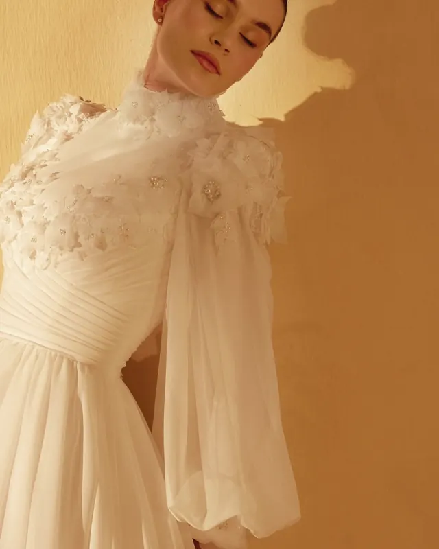
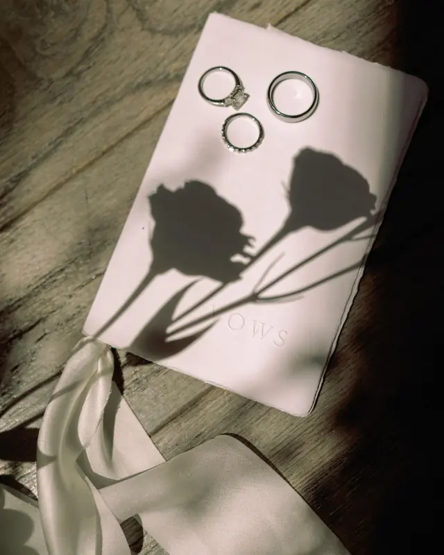

Aşkını bulanlara Maşuk olmak için hazırız.
Modest couture · Satış ve kiralama
Bir gelinliğin içinden
-
 dantel
kupon dantel, motif motif
dantel
kupon dantel, motif motif
-

güller elde yapılır -
 tül
ipek, hafif
tül
ipek, hafif
Kupon dantel metreyle kesilmez. Her motif, siluetin en zarif noktasına oturacak biçimde yerleştirilir. Ma'shuk'un modest koleksiyonları bu sabırla hazırlanır.
Tasarımlarımız


İki yol, aynı özen
Satın alma
Gelinliğiniz size göre prova edilir ve sizinle kalır.
Kiralama
Aynı couture işçilik, kiralama seçeneğiyle.
Fiyat ve koşullar için WhatsApp'tan yazmanız yeterli.
Davetlisiniz
Prova randevusu
- WhatsApp'tan yazın, düğün tarihinizi paylaşın
- Size uygun gün ve saati birlikte seçelim
- Atölyede deneyin, dantele yakından dokunun
- Satın alma ya da kiralamayla tarihinizi ayırtın
Yalnız randevu ile çalışıyoruz

Atölyemiz
Gezi Yolu Sok. No:26Dragos, Kartal, İstanbul